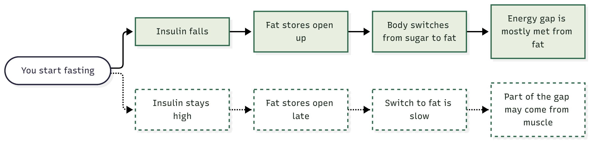

Two individuals adhere to the exact same intermittent fasting schedule for the same period. One notices a pronounced reduction in waist circumference. The other registers a drop on the bathroom scale, yet their abdominal fat remains virtually untouched. Same fasting protocol, completely divergent outcomes. Why?
One probable answer lies in circulating insulin concentrations. Emerging scientific evidence suggests that when cellular insulin sensitivity is compromised (insulin resistance) and systemic insulin levels remain chronically elevated (hyperinsulinemia), the body's physiological adaptation to caloric deprivation may be altered. In this review, we dissect how much of this hypothesis is backed by hard evidence. To be transparent from the outset: the clearest mechanistic insights derive from murine models, while human trial data remains substantially more nuanced.
In brief:
- Key Findings: Murine experiments demonstrate that chronic hyperinsulinemia diminishes adipose tissue loss while exacerbating lean mass wasting during intermittent fasting. Human observations confirm that fasting responses vary by baseline metabolic status, though definitive trials directly linking baseline insulin to fasting body composition remain scarce.
- Evidence Reliability: Mechanistic pathways are elucidated primarily in rodents. Human clinical confirmation is indirect and multifaceted.
- Clinical Takeaway: You do not need to abandon intermittent fasting. However, monitoring body composition rather than total scale weight and proactively safeguarding skeletal muscle become paramount—particularly if you suspect underlying insulin resistance.
The Baseline Physiology: What Does the Body Do During Fasting?
Postprandially, pancreatic beta cells secrete insulin. Beyond facilitating glucose uptake into skeletal muscle and hepatic tissues, insulin transmits a clear biochemical command to adipocytes: "Keep the storage gates closed; halt lipolysis."
As the post-absorptive fasting window lengthens, plasma insulin concentrations decline, reversing the endocrine signal. Adipocytes activate intracellular lipases, liberating free fatty acids into systemic circulation. Simultaneously, skeletal muscle and hepatocytes transition from carbohydrate oxidation to fatty acid utilization. The capacity of an organism to switch seamlessly between glucose and lipid fuels is termed metabolic flexibility.
The fundamental premise of intermittent fasting for fat loss hinges upon this substrate switch. Crucially, the transition requires a substantial drop in circulating insulin. If insulin levels fail to decline sufficiently—or if target tissues remain refractory to the hormonal signal—this metabolic switch can falter.

What Changes When Insulin Remains Chronically Elevated? Three Candidate Mechanisms
In insulin resistance, target cells exhibit blunted responsiveness to normal insulin concentrations. The endocrine pancreas compensates by amplifying insulin secretion, maintaining a state of chronic hyperinsulinemia. Recent mechanistic literature suggests three potential bottlenecks during fasting:
1. Adipose lipolytic machinery may be downregulated. Adipose tissue biopsies from individuals with visceral obesity and insulin resistance demonstrate significantly reduced gene expression of adipose triglyceride lipase (ATGL) (*Berndt et al., 2008*). In essence, the enzymatic machinery required to liberate stored lipids is suppressed at baseline.
2. The metabolic fuel switch is sluggish. Wijngaarden et al. (2013) subjected 12 lean and 14 obese non-diabetic individuals to a 48-hour fast. Despite comparable weight loss across cohorts, obese subjects displayed blunted insulin declines and an impaired transition toward whole-body lipid oxidation. Furthermore, skeletal muscle biopsies revealed diminished insulin receptor substrate and mitochondrial respiratory chain complexes. Parallel murine research (*Conn et al., 2024*) demonstrated that alternate-day fasting enhanced fat oxidation and metabolic flexibility in lean mice, but failed to do so in diet-induced obese, diabetic animals.
3. Lean mass may be sacrificed preferentially over fat. In a seminal study, Marko et al. (2026) subjected obese male mice to a 10-week 5:2 fasting regimen. Animals with sustained hyperinsulinemia retained larger adipose depots and experienced substantial skeletal muscle atrophy compared to controls. This phenotype was mediated by down-regulation of IRF4 in adipose tissue; genetic ablation of adipocyte IRF4 fully recapitulated this pathological pattern—fat preserved, muscle degraded. Intriguingly, in a companion human cohort subjected to a 48-hour fast, higher baseline fasting insulin correlated with accelerated loss of lean body mass.
Synthesizing these three lines of evidence yields a biologically plausible hypothesis: persistent hyperinsulinemia delays lipolysis, impairs metabolic flexibility, and diverts bioenergetic demand toward skeletal muscle catabolism. However, this remains a working hypothesis awaiting robust human validation.
Does This Hold True in Human Clinical Trials?
The human literature presents a more nuanced reality. Looking at broad clinical trial averages:
- A systematic review and meta-analysis by *Siles-Guerrero et al. (2024)* comprising 10 randomized trials (623 participants) revealed that intermittent fasting and continuous energy restriction produced equivalent effects on fat-free mass.
- In a 6-month randomized trial of 75 adults with type 2 diabetes, *Pavlou et al. (2023, 2025)* reported that an 8-hour time-restricted eating window preserved lean mass just as effectively as daily 25% caloric restriction.
- *Xing et al. (2026)* synthesized 28 randomized trials (1,833 adults) and noted modest associations between intermittent fasting and lean mass loss, though the overall GRADE certainty of evidence was categorized as low to very low.
Taken in aggregate, standard clinical trials refute the sensationalist claim that "intermittent fasting automatically dissolves muscle." Caloric restriction of any modality entails some risk of lean tissue loss.
However, population averages often mask critical clinical subgroups. Existing randomized trials rarely stratify outcomes by baseline insulin resistance indices (such as HOMA-IR or fasting insulin). Consequently, whether a hyperinsulinemic subpopulation exhibits accelerated muscle loss during fasting remains an open clinical question. To help close this critical knowledge gap, our research group is currently conducting a comprehensive systematic review and meta-analysis specifically evaluating baseline insulin sensitivity as an effect modifier of fasting outcomes.
Evidence from continuous caloric restriction further underscores this complexity:
- *Andersson et al. (2025)* demonstrated that among 93 adults on a 10-week low-calorie diet, individuals with the highest cellular adipocyte insulin sensitivity lost ~30% more adipose mass, whereas systemic HOMA-IR showed no predictive power.
- *Reik et al. (2024)* observed in 158 adults that dynamic postprandial glucose and insulin trajectories during an OGTT failed to predict body composition changes following an 8-week low-calorie diet.
The Reverse Axis: Can Fasting Reverse Insulin Resistance?
The physiological dialogue is bidirectional. While baseline insulin status may influence the fasting response, intermittent fasting and caloric restriction exert potent therapeutic effects on insulin resistance itself.
In humans, time-restricted eating reliably reduces fasting insulin and improves peripheral insulin sensitivity in individuals with prediabetes and obesity (*Cienfuegos et al., 2021*). The *Siles-Guerrero et al. (2024)* meta-analysis confirmed modest additional reductions in fasting insulin (−7.46 pmol/L) and HOMA-IR (−0.14) with intermittent fasting over continuous restriction. In the trial by *Pavlou et al. (2023)*, both time-restricted eating and caloric restriction lowered HbA1c by nearly 0.9 percentage points.
Recent experimental findings by *Duan et al. (2026)* in rodent models illustrate that switching from an obesogenic diet to standard chow triggers spontaneous caloric reduction and normalizes insulin resistance markers within 1 to 3 days, restoring hepatic and muscular insulin signaling.
Therefore, the presence of baseline insulin resistance by no means contraindicates intermittent fasting. Baseline status is a variable to be managed, not a barrier to metabolic improvement.
**Clinical Human Trials:** Meta-analyses show comparable lean mass preservation between fasting and caloric restriction. Stratified clinical trials evaluating fasting efficacy as a direct function of baseline insulin status remain limited.
Actionable Clinical Takeaways
- Track Body Composition, Not Merely Scale Weight: If scale weight declines while waist circumference plateaus, the mass lost may not originate predominantly from visceral adipose tissue. Prioritize dual-energy X-ray absorptiometry (DXA) or bioimpedance when feasible.
- Prioritize Skeletal Muscle Preservation: Resistance training dramatically blunts lean tissue loss during caloric deficit (*Xie et al., 2025*). Combining progressive resistance exercise with time-restricted eating preserves lean mass while improving HOMA-IR (*Jiao et al., 2026*). Ensure adequate daily protein intake (1.6–2.0 g/kg).
- Avoid Overly Aggressive Initial Protocols: Rather than starting with strenuous 24-hour fasts or 5:2 regimens, adopt a moderate 14:10 or 16:8 time-restricted feeding window with a modest energy deficit to minimize potential muscle catabolism under elevated insulin tone.
- Physician Consultation: Individuals managing diabetes or taking hypoglycemic agents should adjust medication regimens exclusively under medical supervision, as prolonged fasting carries acute hypoglycemia risks.
Conclusions
Identical nutritional protocols do not elicit identical biological responses across distinct metabolic phenotypes. Circulating insulin levels represent a key determinant of substrate mobilization, metabolic flexibility, and the relative proportion of adipose versus skeletal muscle loss. As we await the results of our forthcoming meta-analysis, the central lesson remains clear: the bathroom scale alone is an insufficient indicator of metabolic health.
📚 References
- Andersson DP, Sørensen TIA, Arner P. (2025). The anti-lipolytic effect of insulin in adipocytes associates with the magnitude of dietary induced loss in body weight and fat mass: a longitudinal study. *Obes Facts*, 19(2), 109–117.
- Berndt J, Kralisch S, Klöting N, et al. (2008). Adipose triglyceride lipase gene expression in human visceral obesity. *Exp Clin Endocrinol Diabetes*, 116(4), 203–210.
- Cienfuegos S, McStay M, Gabel K, Varady KA. (2021). Time restricted eating for the prevention of type 2 diabetes. *J Physiol*, 600(5), 1253–1264.
- Conn MO, Marko DM, Schertzer JD. (2024). Intermittent fasting increases fat oxidation and promotes metabolic flexibility in lean mice but not obese type 2 diabetic mice. *Am J Physiol Endocrinol Metab*, 327(4), E470–E477.
- Duan X, Davis LM, Patel S, et al. (2026). Integrated analysis of insulin resistance reveals metabolic remodeling following diet switch-triggered calorie reduction. *Sci Adv*, 12(19), eaed0535.
- Jiao M, Yan H, Zhang B, et al. (2026). Optimal dosage of exercise combined with intermittent fasting for body composition and cardiometabolic health in adults: a systematic review and multilevel meta-analysis. *Front Nutr*, 13, 1772836.
- Marko DM, Conn MO, Cavallari JF, et al. (2026). Insulin and adipocyte IRF4 promote fat retention over muscle preservation during intermittent fasting in obesity. *Cell Rep*, 45(3), 117023.
- Pavlou V, Cienfuegos S, Lin S, et al. (2023). Effect of time-restricted eating on weight loss in adults with type 2 diabetes: a randomized clinical trial. *JAMA Netw Open*, 6(10), e2339337.
- Pavlou V, Lin S, Cienfuegos S, et al. (2025). Effect of time-restricted eating versus daily calorie restriction on mood and quality of life in adults with type 2 diabetes. *Nutrients*, 17(17), 2757.
- Reik A, Schauberger G, Wiechert M, Hauner H, Holzapfel C. (2024). Association between the postprandial response to an oral glucose tolerance test and anthropometric changes after an 8-week low-calorie formula diet: results from the Lifestyle Intervention (LION) Study. *Mol Nutr Food Res*, 68(12), e2400106.
- Siles-Guerrero V, Romero-Márquez JM, García-Pérez RN, et al. (2024). Is fasting superior to continuous caloric restriction for weight loss and metabolic outcomes in obese adults? A systematic review and meta-analysis of randomized clinical trials. *Nutrients*, 16(20), 3533.
- Wijngaarden MA, van der Zon GC, van Dijk KW, Pijl H, Guigas B. (2013). Effects of prolonged fasting on AMPK signaling, gene expression, and mitochondrial respiratory chain content in skeletal muscle from lean and obese individuals. *Am J Physiol Endocrinol Metab*, 304(9), E1012–E1021.
- Xie Y, Gu Y, Li Z, et al. (2025). Comparing exercise modalities during caloric restriction: a systematic review and network meta-analysis on body composition. *Front Nutr*, 12, 1579024.
- Xing K, Liu R, Peng S, et al. (2026). Age-specific analysis of the effects of intermittent fasting on body composition and cardiometabolic markers in healthy adults and individuals with overweight or obesity: a systematic review and meta-analysis of randomized controlled trials. *Nutrients*, 18(11), 1799.